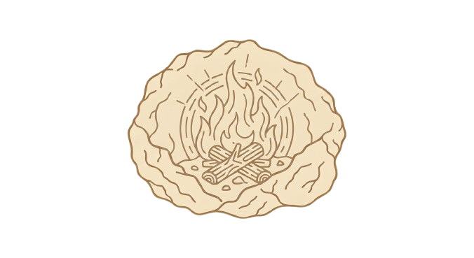

Filtra por ruta temática, momento de la visita o ámbito expositivo.
No hay vídeos con estos filtros.

Vídeos
Vídeos educativos en español de menos de 20 minutos con subtítulos en inglés activados al reproducir.

Elige cómo ver el relatoLas rutas temáticas organizan los vídeos según el tipo de historia que quieras profundizar.
Selecciona un momento de la visita para filtrar automáticamente los vídeos más útiles.
Filtra por ruta temática, momento de la visita o ámbito expositivo.
No hay vídeos con estos filtros.
Todos los audiovisuales cuentan con subtítulos en español e inglés para garantizar accesibilidad auditiva.
Disponibles descripciones de audio para personas con discapacidad visual en contenido seleccionado.
Acceso a texto completo de cada audiovisual para consulta académica e inclusión digital.
Cada vídeo incluye preguntas guía y una actividad breve para trabajar antes o después de la visita al centro.
Combina estas actividades con el glosario y el recorrido por ámbitos para reforzar vocabulario y método científico.
Recursos relacionados: Glosario Recorrido expositivo Visita